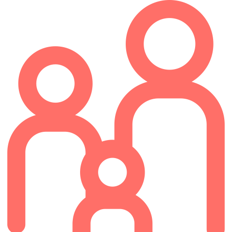

Rebooting public services for the 21st century
An incubator for radically disruptive public service ideas, designed, owned and delivered by the public sector for public impact
As we face a global recession, public sector spend continues to reduce at pace. At the same time, social problems have increased in scale and complexity. And in the middle of a global pandemic, this trend to do more with less will only continue.
We need a radical new model, which seeds and keeps innovation firmly in the public realm. We need to use entrepreneurial methods to create technology-driven services that deliver better outcomes for citizens for less and remain in public ownership.
Even before the current crisis hit, at the end of last year we brought together a group of forward-thinking leaders in local government to ask a bold question: can local authorities work together to design startup-from-scratch, scalable, publicly owned ventures that are better than current services and cost less?
Led by eleven councils from across England, it was the beginning of an incubator for radically-disruptive public service ideas, owned and driven by public bodies.
We call this the Institute of Impossible Ideas.
Our ventures
Our incubator of local authorities and social entrepreneurs has designed and refined three venture ideas that can radically disrupt the market. Each has the potential to replace one or more existing services within three to five years, delivering better outcomes for people and transforming the system. These public service ventures, owned and driven by public bodies, are ready now to be rolled out and tested with local authority partners.
A home for everyone
A digitally native social lettings agency that is built to scale.
Our teams build strong, trusting relationships between vulnerable tenants and their landlords so that everybody has a stable home and gets the right support to thrive
A caring, stable home for children
A new way to provide a stable home for children. We make it easy for caring people to become and continue as foster carers.
We use smart matching to find the right placement for children and families, and provide a 21st-century, enjoyable, supportive experience for carers, children and the people around them.
Staying healthy and independent for longer
A demand-driven health and wellbeing subscription platform. We help people build the relationships and access the services they need to stay strong, healthy and happy at any point in their lives.
We get people planning and looking after themselves early, so that real care becomes part of a good life.
Learn more
Whether you’re a public sector organisation who recognises these challenges and wants to get involved, or a social investor keen to support this radical movement for change, we’re keen to hear from you.
Get it touch for more information about each of these ventures. Together, we can transform the system so that it works for the people and deliver truly impactful, sustainable change for decades to come.
Learn more